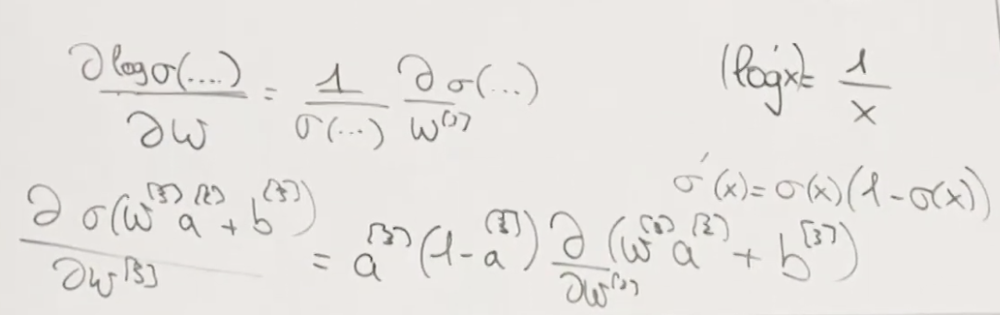
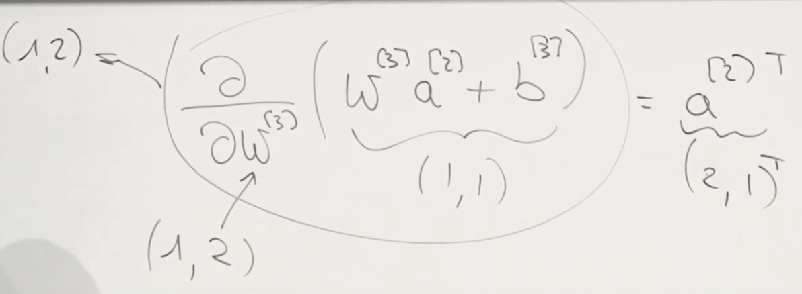
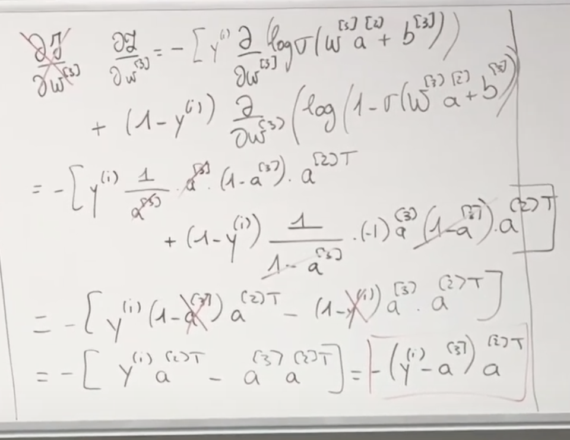
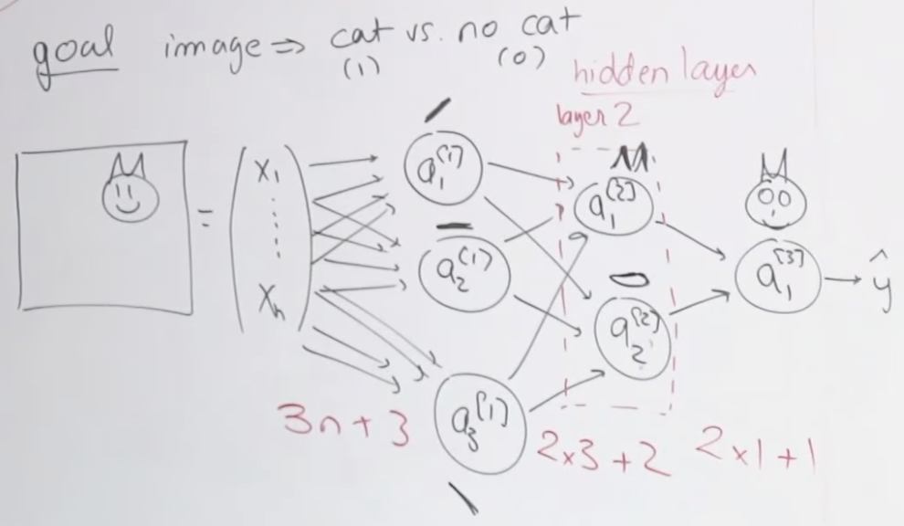
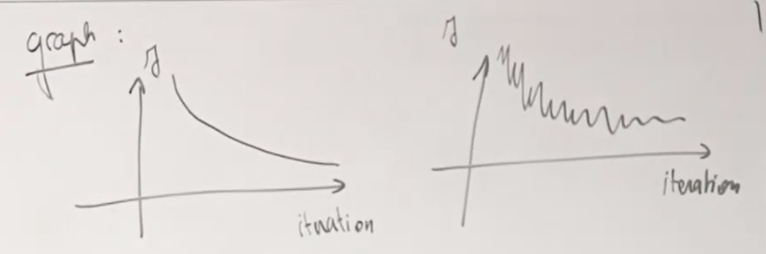

Lec 12-Improving NN
Contents
Lec 12-Improving NN#
Outline#
Logistic Regression as NN (last lecture)
Neural Network (last lecture)
Backpropagation (this lecture)
Improving your NN (this lecture)
Backpropagation#
in order to define optimization problem and find right parameters, define a cost function
forward propagating m examples at a time
cost function is the average of loss function
\(J(\hat{y}, y) = \frac{1}{m}\sum\limits_{i=1}^{m}L^{(i)}\)
where
\(L^{(i)} = -[y^{(i)}\log\hat{y}^{(i)} + (1-y^{(i)})\log(1-\hat{y}^{(i)}) ]\)
the parameters \(W^{[1]}, b^{[1]}, W^{[2]}, b^{[2]}, W^{[3]}, b^{[3]}\)
the square bracket denotes the layer
we need to train all these parameters
backward propagation
here we start from back and move forward
we compute derivative of \(W^{[3]}\) and \(b^{[3]}\), then \(W^{[2]}\) and \(b^{[2]}\) and finally \(W^{[1]}\) and \(b^{[1]}\)
\(w^{[l]} = w^{[l]} - \alpha\frac{\partial L}{\partial w^{[l]}}\)
Derivative of loss function wrt \(W^{[3]}\)#
Lets compute derivation of loss function wrt to \(W^{[3]}\), then we can compute cost function as it will be summation over all training example
\(\frac{\partial L}{\partial W^{[3]}} = - [y^{(i)} \frac{\partial}{\partial W^{[3]}} (\log\sigma(W^{[3]} a^{[2]} + b^{[3]})) + (1-y^{(i)}) \frac{\partial}{\partial W^{[3]}} (\log(1-\sigma(W^{[3]} a^{[2]} + b^{[3]})))]\)
The reason we have \(a^{[2]}\) in this equation is because \(a^{[2]}\) is one of the parameter and input for \(Z^{[3]}\) activation node
Breaking down derivative#
There is a composition of three functions here:
logarithm
sigmoid
linear function
Derivative of log function
\((\log x)' = \frac{1}{x}\)
Derivative of sigmoid function \(\sigma(x) = \frac{1}{1+e^{-x}}\)
\(\sigma'(x) = \sigma(x)(1-\sigma(x))\)
Derivative of log of sigmoid function \(\log\sigma(..)\) wrt \(W^{[3]}\)
\(\frac{\partial \log\sigma(..)}{\partial w} = \frac{1}{\log\sigma(..)} \frac{\partial\sigma(..)}{W^{[3]}}\)
Derivative of log of sigmoid function \(\log\sigma(Z^{[3]})\) wrt \(W^{[3]}\)
\(\begin{equation}\\ \begin{aligned}\\ \frac{\partial \log\sigma(Z^{[3]})}{\partial W^{[3]}} &= \frac{1}{\sigma(Z^{[3]})} \frac{\partial\sigma(Z^{[3]})}{\partial W^{[3]}}\\ &= \frac{1}{a^{[3]}} \frac{\partial\sigma(W^{[3]}a^{[2]} + b^{[3]} )}{\partial W^{[3]}}\\ \end{aligned}\\ \end{equation}\)
Applying derivative of sigmoid function from above
\(\begin{equation}\\ \begin{aligned}\\ &= \frac{1}{a^{[3]}}.{a^{[3]}(1-a^{[3]})}. \frac{\partial(W^{[3]}a^{[2]} + b^{[3]} )}{\partial W^{[3]}}\\ \end{aligned}\\ \end{equation}\)
Derivative of linear function \(Z^{[3]}\) wrt \(W^{[3]}\)
\(\frac{\partial}{\partial W^{[3]}}(W^{[3]}a^{[2]} + b^{[3]}) = a^{[2]T}\)
Matrix shape of linear function \((W^{[3]}a^{[2]} + b^{[3]})\) is (1,1)
Matrix shape of \(W^{[3]}\) is (1,2) because it is connected to 2 neurons
So the matrix shape of whole derivative will be the shape of \(W^{[3]}\) i.e., (1,2)
because we are taking the derivative of scalar (numerator) wrt higher dimension matrix, i.e., row vector(denominator) here.
if not in matrix form, derivative of linear function would be \(a^{[2]}\). But the shape of \(a^{[2]}\) is (2,1) which will not match with the overall derivative shape which is (1,2). So the result should be in \(a^{[2]T}\) which will have the same shape as \(W^{[3]}\)
(1,2)
Derivative of log of sigmoid function \(\log\sigma(Z^{[3]})\) wrt \(W^{[3]}\) (contd from above)
\(\begin{equation}\\ \begin{aligned}\\ \frac{\partial \log\sigma(Z^{[3]})}{\partial W^{[3]}} &= \frac{1}{a^{[3]}}.{a^{[3]}(1-a^{[3]})}. \frac{\partial(W^{[3]}a^{[2]} + b^{[3]} )}{\partial W^{[3]}}\\ &= \frac{1}{a^{[3]}}.{a^{[3]}(1-a^{[3]})}. a^{[2]T}\\ \end{aligned}\\ \end{equation}\)
Similarly derivative of 2nd log piece of sigmoid function \((1-\log\sigma(Z^{[3]}))\) wrt \(W^{[3]}\)
 $\tiny{\text{YouTube-Stanford-CS229-Andrew Ng/Kian Katanforoosh}}$  $\tiny{\text{YouTube-Stanford-CS229-Andrew Ng/Kian Katanforoosh}}$\(\begin{equation}\\ \begin{aligned}\\ \frac{\partial (1-\log\sigma(Z^{[3]}))}{\partial W^{[3]}} &= \frac{1}{1-a^{[3]}}.(-1){a^{[3]}(1-a^{[3]})}. a^{[2]T}\\ \end{aligned}\\ \end{equation}\)
(Continuing from above) derivative of loss function wrt to \(W^{[3]}\)
 $\tiny{\text{YouTube-Stanford-CS229-Andrew Ng/Kian Katanforoosh}}$\(\begin{equation}\\ \begin{aligned}\\ \frac{\partial L}{\partial W^{[3]}} &= - [y^{(i)} \frac{\partial}{\partial W^{[3]}} (\log\sigma(W^{[3]} a^{[2]} + b^{[3]})) + (1-y^{(i)}) \frac{\partial}{\partial W^{[3]}} (\log(1-\sigma(W^{[3]} a^{[2]} + b^{[3]})))]\\ &= - [y^{(i)} \frac{1}{a^{[3]}}.{a^{[3]}(1-a^{[3]})}. a^{[2]T} + (1-y^{(i)}) \frac{1}{1-a^{[3]}}.(-1){a^{[3]}(1-a^{[3]})}. a^{[2]T}]\\ &= -[y^{(i)}(1-a^{[3]})a^{[2]T} - (1-y^{(i)})a^{[3]}a^{[2]T}]\\ &= -[y^{(i)}a^{[2]T} - a^{[3]}a^{[2]T}]\\ &= -(y^{(i)} - a^{[3]})a^{[2]T}\\ \end{aligned}\\ \end{equation}\)
Derivative of cost function wrt \(W^{[3]}\)#
\(\frac{\partial J}{\partial W^{[3]}} = -\frac{1}{m}\sum\limits_{i=1}^{m}(y^{(i)} - a^{[3]})a^{[2]T}\)
Derivative of loss function wrt \(W^{[2]}\)#
 $\tiny{\text{YouTube-Stanford-CS229-Andrew Ng/Kian Katanforoosh}}$\(\frac{\partial L}{\partial W^{[2]}} = \frac{\partial L}{\partial a^{[3]}} \frac{\partial a^{[3]}}{\partial Z^{[3]}} \frac{\partial Z^{[3]}}{\partial a^{[2]}} \frac{\partial a^{[2]}}{\partial Z^{[2]}} \frac{\partial Z^{[2]}}{\partial W^{[2]}} \)
Backpropagation using chain rule#
What is the thought process of writing chain rule?
We need to take derivative wrt variables thorough which errors will backpropagate. We dont want errors to get stuck. We need to go through variables that are connected to each other.
\(\hat{y}\) also called \(a^{[3]}\) is the first thing that is connected to loss function
\(\frac{\partial L}{\partial a^{[3]}}\) - the output neuron is directly connected to loss function
\(\frac{\partial a^{[3]}}{\partial Z^{[3]}}\) - \(a^{[3]}\) which is the output activation of the last neuron is connected to the linear part of the last neuron which is \(Z^{[3]}\)
which will be derivative of sigmoid (\(\sigma'(x)\)) because \(a^{[3]} = \sigma({Z^{[3]}})\) and \(\sigma'(x) = \sigma(x)(1-\sigma(x))\)
\(\frac{\partial Z^{[3]}}{\partial a^{[2]}}\) - We know \(Z^{[3]} = W^{[3]}a^{[2]} + b^{[3]}\)
which path should we take in order to back propagate?
Not \(W^{[3]}\), as we will be stuck
Not \(b^{[3]}\), as we will be stuck
we should derivate wrt \(a^{[2]}\), as it is connected to \(Z^{[2]}\) and \(Z^{[2]}\) is connected to \(a^{[1]}\), and then we can backpropagate using this path
\(\frac{\partial a^{[2]}}{\partial Z^{[2]}}\) - from above
\(\frac{\partial Z^{[2]}}{\partial W^{[2]}}\) - from above
How to use the derivative of loss function wrt \(W^{[3]}\) in derivative of loss function wrt \(W^{[2]}\)#
Term 1 and 2
We calculated earlier
\(\frac{\partial L}{\partial W^{3}} = -(y^{(i)} - a^{[3]}) = (a^{[3]} - y^{(i)})\)
But
\(\frac{\partial L}{\partial W^{3}} = \frac{\partial L}{\partial a^{3}} \frac{\partial a^{3}}{\partial W^{3}} \)
So
\(\frac{\partial L}{\partial a^{3}} \frac{\partial a^{3}}{\partial W^{3}} = (a^{[3]} - y^{(i)})\)
Term 3
We calculated earlier
\(Z^{[3]} = W^{[3]}a^{[2]}+b^{[3]}\)
So
\(\frac{\partial Z^{[3]}}{\partial a^{[2]}} = W^{[3]T}\)
Why transpose?
Size of \(Z^{[3]}\) - (1,1)
Size of \(a^{[2]}\) - (2,1)
Size of \(W^{[3]}\) - (1,2) - so we need to transpose this - \(W^{[3]T}\)
Term 4
This is the derivative of sigmoid (\(\sigma'(x)\)) because \(a^{[2]} = \sigma({Z^{[2]}})\) and \(\sigma'(x) = \sigma(x)(1-\sigma(x))\)
\(\frac{\partial a^{[2]}}{\partial Z^{[2]}} = a^{[2]}(1 - a^{[2]})\)
sigmoid times 1 minus sigmoid
Term 5
As calculated earlier, derivative of linear function \(Z^{[3]}\) wrt \(W^{[3]}\)
\(\frac{\partial Z^{[3]}}{\partial W^{[3]}} = \frac{\partial}{\partial W^{[3]}}(W^{[3]}a^{[2]} + b^{[3]}) = a^{[2]T}\)
So derivative of linear function \(Z^{[2]}\) wrt \(W^{[2]}\)
\(\frac{\partial Z^{[2]}}{\partial W^{[2]}} = \frac{\partial}{\partial W^{[2]}}(W^{[2]}a^{[1]} + b^{[2]}) = a^{[1]T}\)
Derivative of loss function wrt \(W^{[2]}\) (contd)#
\(\begin{equation}\\ \begin{aligned}\\ \frac{\partial L}{\partial W^{[2]}} &= \frac{\partial L}{\partial a^{[3]}} \frac{\partial a^{[3]}}{\partial Z^{[3]}} \frac{\partial Z^{[3]}}{\partial a^{[2]}} \frac{\partial a^{[2]}}{\partial Z^{[2]}} \frac{\partial Z^{[2]}}{\partial W^{[2]}}\\ &= (a^{[3]} - y^{(i)}).W^{[3]T}.a^{[2]}(1 - a^{[2]}).a^{[1]T}\\ \end{aligned}\\ \end{equation}\)
Size of matrix:
\((2,3) = (1,1).(2,1).(2,1).(1,3)\)
This is not correct
For derivative of sigmoid we use element wise product (Details in the note)
\(W^{[3]T}*a^{[2]}(1 - a^{[2]})\)
Rearranging elements we get
\(\{\{\{W^{[3]T}*a^{[2]}(1 - a^{[2]})\}.(a^{[3]} - y^{(i)})\}.a^{[1]T}\}\)
Matrix size
\(\{\{\{(2,1)*(2,1)\}.(1,1)\}.(1,3)\}\)
The results must be cached during forward propagation so that it gets reused during backward propagation step
It results in computational efficiency
Improving Neural Networks#
Use different activation functions
One of the activation function we used was sigmoid function
Sigmoid \(\sigma(z) = \frac{1}{1+e^{-z}}\)
this ranges from 0 to 1
adv: it is used for classification as probability
disadv: if you have high or low z’s (activation), the gradient is very close to 0
it works very well in the linear regime but has trouble working in saturating regimes because the network doesn’t update parameters properly
What is the problem with low gradients/saturating regimes?
when we backpropagate, if z we cached was big, the gradient will be very small and it will be super hard to update parameters that are early in the network because the gradient will be negligible
\(\sigma'(x) = \sigma(x)(1-\sigma(x))\)
Other activation function we used was ReLU
ReLU(z) = \(\begin{equation} \begin{cases} 0 & \text{if } z \le 0\\ z & \text{if } z \gt 0\\ \end{cases} \end{equation}\)
adv: if z is very big in positives, there is no saturation, the gradient will be 1
In house prediction problem, it makes sense to use ReLU compared to sigmoid or tanh, because the value is within 0 to \(+\infty\)
ReLU’(z) = \(\mathbb 1\{z \gt 0\}\)
one other commonly used activation function is tanh
tanh(z) = \(\frac{e^{z} - e^{-z}}{e^{z} + e^{-z}}\)
this ranges from -1 to 1
adv: this is used in problems where there is positive reward or negative reward like in reinforcement learning
disadv: same as sigmoid
tanh’(z) = 1 - tanh(z)\(^{2}\)
Why do we need activation functions#
Lets say we use identity function as activation function \(z \rightarrowtail z\)
Lets derive forward propagation
from this we see that we need activation functions
otherwise no matter how deep your network is, it will be equivalent to linear regression
generally we use the same activation function in the whole network
there are experiments using different activation function in different layers of network, but the consensus is using a single activation function
Initialization Methods#
If z is too small or too big, it will lead to saturation of network
Inorder to avoid that we can use normalization of input
One method is to take average of x’s and take difference of x’s with the average. This method brings examples on the axes, but they are still dissipated
to fully solve the problem, divide the x’s by standard dev. This method centers examples on the
what is good about this method?
Earlier the loss function contours were ellipsoidal in nature, so gradient descent algorithm took multiple iteration to reach over the global minima
with examples normalized, the gradient descent points towards the middle
that is the reason why the second loss function is easier to train
Important point: the \(\sigma\) and \(\mu\) computed over the training set must be used over the test set as well. We should not compute the mean and standard deviation of the test set and normalize your test inputs through the network because your network is not used to seeing this type of transformation as an input. We want the distribution of inputs at the first neuron to be always the same, no matter if it is train or test set.
Vanishing/Exploding gradients#
Lets consider very deep network, with identity activation function and zero bias, the \(\hat{y}\) and gradient will explode if the number is higher than 1 or the gradient will vanish if it is lower than 1.
The solution is initialize the weights properly, with right range of values
The weight range should be as close as 1, which will avoid the vanishing/exploding gradients problem
Initialization problem#
Example with 1 neuron
if the number of features are large, we should have small weight, otherwise z will explode
Few other intializations
Optimization#
Gradient Descent
Stochastic Gradient Descent
Batch Gradient Descent
Mini-Batch Gradient Descent
trade-off between stochasticity and vectorization
Notation#
m training example
\(X = \left(x^{(1)} x^{(2)} ... x^{(m)}\right)\) \(Y = \left(y^{(1)} y^{(2)} ... y^{(m)}\right)\)
T batches each containing 1000 training example
 $\tiny{\text{YouTube-Stanford-CS229-Andrew Ng/Kian Katanforoosh}}$\(X = \left(X^{\{1\}} X^{\{2\}} ... X^{\{T\}}\right)\) \(Y = \left(Y^{\{1\}} Y^{\{2\}} ... Y^{\{T\}}\right)\)
Momentum Gradient Descent#
loss is extended a lot in one direction compared to the other
the gd will be orthogonal to the contour
we would be interested in moving faster/larger update in horizontal line and slower/smaller update in vertical side
momentum tells us look at the past update and take an average of the past update
\(v := \beta v + (1-\beta)\frac{\partial L}{\partial w}\)
\(w := w - \alpha v\)
velocity variable tracks the direction that we should take for the current iteration with a factor/weight beta
in terms of implementation/memory it is just one more line of code, but gives lot of efficiency